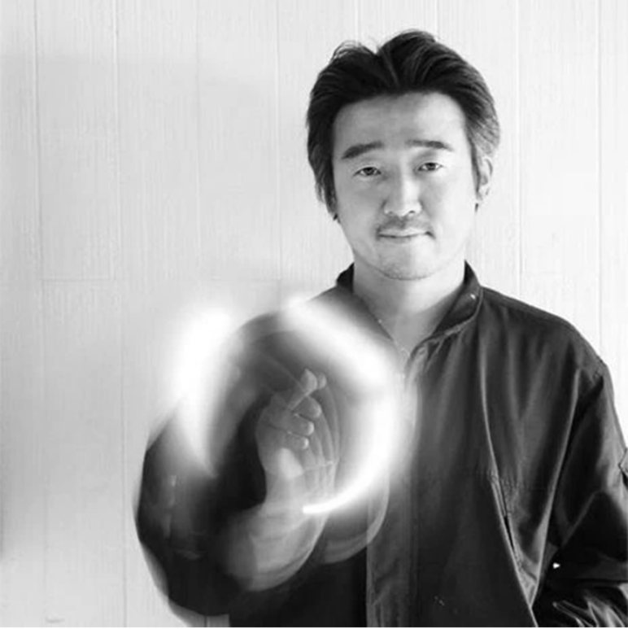

“나의 광고 철학의 핵심어는 ‘레스’(less)이다. 커다란 어젠다 작업을 할 때도 화면에 쓸데없는 것을 안 집어넣는다. 어떻게 적게 얘기하고 상대방을 설득할까, 짧고 단순한 이야기로 한번 광고를 본 사람 가슴에 평생 진한 감동이나 여운으로 남을 수 있을까를 생각한다. 나는 광고를 흥미있는 이야기, 멋진 카피 한 줄이라고 생각하지 않는다. 시인이나 방송작가와 다른 광고장이의 역할이 있다. 15~30초 동안 재미있는 이야기를 풀어나가는 것은 광고장이 고유의 능력이 아니다. 그런 이야기를 하면서도 그 안에 뼈가 있어서 사람들의 인식을 5도, 10도 바꾸는 것, 그것이 능력이다. 해결해야 할 문제가 있을 경우 광고를 통해 사람의 눈과 인식을 바꾸는 게 중요하다. 문제해결에 가장 큰 결정타를 날릴 수 있는 인식 전환이 무엇인가에 초점을 둔다. 부엉이면 부엉이(강남경찰서 벽화 광고), 권총이면 권총(원쇼 칼리지 페스티벌 최고상 수상작 ‘굴뚝총’) 하나로 승부를 건다. 유명 모델도 쓰지 않는다. 상업광고의 경우도 하나를 만들어 여러 사람을 감동시킬 수 있는 방식을 제안한다. 불필요한 제작 공정을 줄이고 홍보도 너무 많이 하지 말자고 제안한다.”
광고인이 되기 위해 노력중인 학생들에게 한마디
사람의 기질이나 삶의 태도, 그리고 습관 등이 그 사람을 천재로 만드는 요소입니다. 이는 부단히 노력하거나 배운다고 되는 것이 아닙니다. 각각의 관에 물, 전기, 가스가 흐르는데 관의 기질에 따라 이 세상에 뿜어내는 것이 달라집니다. 기질마다 각자의 색이 다르고 성숙도가 다른 것이지 기질이 있고 없음의 문제는 아닙니다. 광고나 사람이나 누구나 살아있을 때 아름답습니다. 사람이 더욱 생기 있고 빛나려면 꽃처럼 활짝 펴야합니다. 이를 위해서는 엔돌핀이 돌고 심장이 뛰게 해야 하며 자신이 생각했을 때 옳은 일, 즐거운 일, 재미있는 일을 해야 합니다. 그래야만 몸에서 좋은 호르몬이 나오며 반대로 억지로 하기 싫은 일을 하게 된다던지 눈치를 보게 된다면 그 꽃은 활짝 필 수 없습니다.